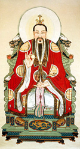

Jade Emperor
The Jade Emperor, or Shangdi, is the ruler of the Heavens, Earth, and the Underworld. He is an elderly man with a flowy beard and mustache donning an equally flowy red gown. As ruler of so many places, his power is his authority and ability to command his servants and bureaucrats. Because of this, he is generally seen sitting atop his jade throne. Although ruler of the Heavens, Earth, and the Underworld, he resides in Heaven.
He is a Taoist God as he is the creator of the universe and all the chi within it. He is also very kind and helping, another fundamental element of Taoism.
He is worshiped on his birthday, the 9th day of the new year during new year’s celebrations. Incense candles and food offerings are presented for him at each household for when he comes and determines which households have been good or evil and rewards and punishes them accordingly.